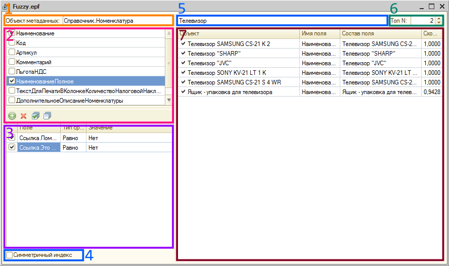

Симметичный режим предназначен для поиска дубликатов, асимметричный - для поиска по подстроке.
В таблице резульатов колонка "Имя поля" указывает на поле, по которому было найдено соответстие, галочками отмечены результаты где найдено точное совпадение.